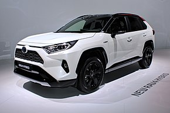
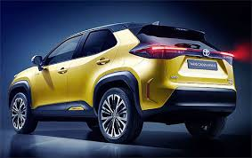
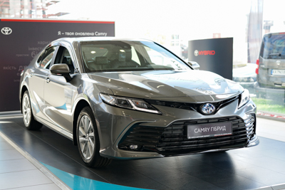
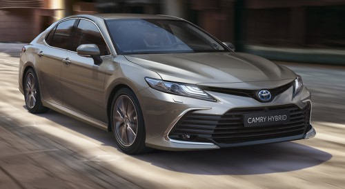
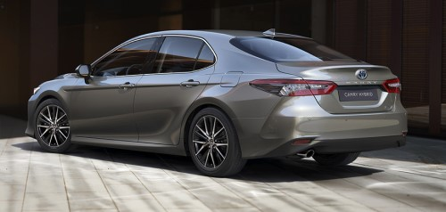
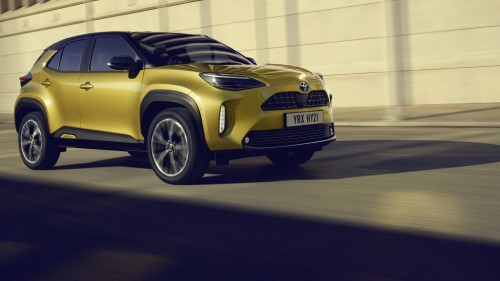
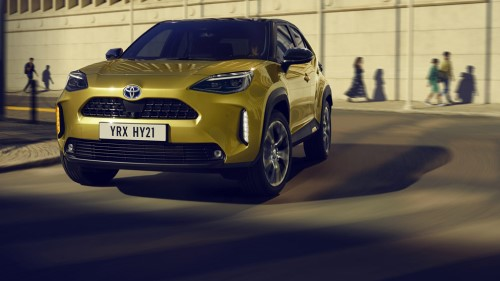
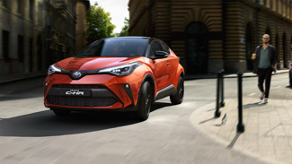
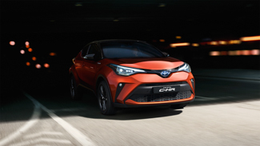

Toyota Motor Corporation
Один з найбільших автовиробників у світі, з конвеєрів якого сходять мільйони автомобілів щорічно. Крім свого
основного напрямку, займається компанія й наданням фінансових послуг. На Toyota працюють сотні тисяч людей по усьому
світу. Проводяться такі популярні й відомі марки, як Yaris, Auris, Avensis, RAV4, Prado
і інші. Дуже активна компанія в різних спортивних змаганнях, будь то Раллійні перегони або Формула 1.



МОДЕЛЬНИЙ РЯД
Toyota Camry Hybrid


Основні характеристики TOYOTA CAMRY HYBRID
- Сучасний дизайн інтер’єру підкреслює простір салону, а 9-дюймовий інформаційно-розважальний сенсорний екран
робить водіння ще комфортнішим. Цей мультимедійний екран дозволяє легко користуватися усім необхідним, включаючи
навігацію, музику та системи Apple CarPlay™ або Android Auto™.
- Оснащений тихим самозарядним гібридним двигуном об’ємом 2,5 літра, автомобіль забезпечує значний крутний момент
на низьких оборотах і феноменальну потужність на високих, а також краще реагування на дії водія та легше
прискорення.
- Поєднуючи в собі елегантність седану та динамічний вигляд, спритна Camry просто «сяє» на дорозі. Це чудово
сконструйоване авто має надзвичайно дивовижну керованість та першокласну оглядовість. Крім того, оновлена Camry
пропонується у декількох елегантних кольорах, що привертатимуть захоплені погляди оточення під час кожної
подорожі.
Toyota Yaris Cross


Особливості нового TOYOTA YARIS CROSS
- БЕЗПЕКА YARIS CROSS
Оснащений комплексом систем активної безпеки Toyota Safety Sense із безліччю передових систем допомоги водієві,
Yaris Cross допомагає вберегти вас та інших учасників дорожнього руху від небезпеки.
- Система передаварійної безпеки
Під час виявлення вірогідного зіткнення система передаварійної безпеки попереджає водія звуковими та візуальними
сигналами, водночас активуючи асистент гальмування. За необхідності гальма застосовуються автоматично, щоб
уникнути чи пом'якшити зіткнення.
- Інтелектуальний адаптивний круїз-контроль
Інтелектуальний асистент IACC поєднує в собі переваги адаптивного круїз-контролю і системи розпізнавання
дорожніх знаків. Інтелектуальний адаптивний круїз-контроль автоматично підтримує задану швидкість і попереджає
водія про зміни її обмеження.
Toyota C-HR


Особливості Toyota C-HR
- ГАРАНТІЯ БЕЗПЕКИ
Toyota C-HR підтримує систему безпеки Toyota Safety Sense — набір провідних технологій для допомоги водію.
- ПЕРЕДОВІ ТЕХНОЛОГІЇ
Toyota C-HR оснащений низкою інноваційних технологій — від потужних та ефективних гібридних силових установок до
системи безпеки та підключених цифрових сервісів.
Цікаві факти
- Однієї із причин зміни назви з «Toyoda» на «Toyota» з`явилося не тільки благополуччя, але й «благописание» —
справа в тому, що в другому випадку назва записується катаканой ( японською абеткою) за допомогою восьми
штрихів. А вісім у Японії — це щасливе число
- Тривалий час логотип у компанії як такий був відсутній, а напис «Toyota» на автомобілях робилася зовсім по
різному. Це викликала безліч проблем. Нарешті, в 1989 році був створений логотип, використовуваний і по нині.
Він уважається одним із самих пізнаваних. Два овали утворюючі літеру «Т», за заявою дизайнерів, означають
взаємовигідні відносини, а овал у якому вони перебувають символізує собою плани, що далеко йдуть, компанії, що
прагне до світового панування